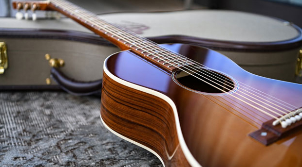
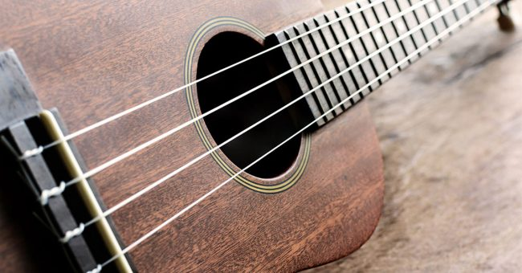

Instruments

Piano
Piano is often seen in Lofi as it can be both very basic and complex.

Acoustic Guitar
The guitar provides a calm feeling when used for both chord progressions and fingerpicking.

Ukulele
The ukulele is a pleasant instrument that brings a cheerful feeling.